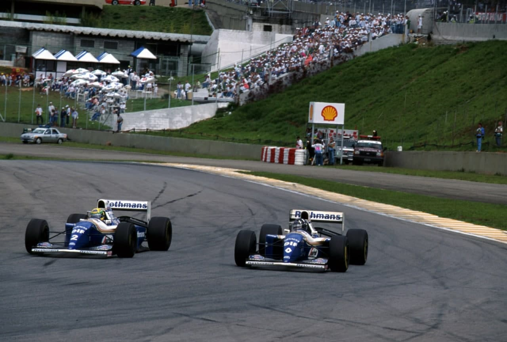
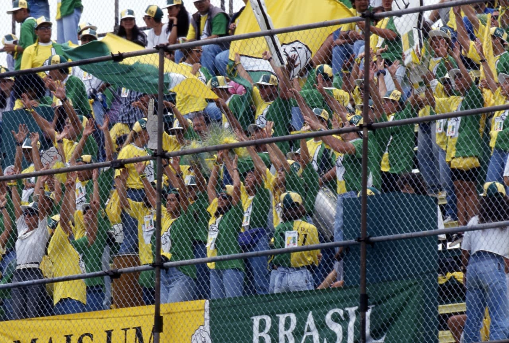
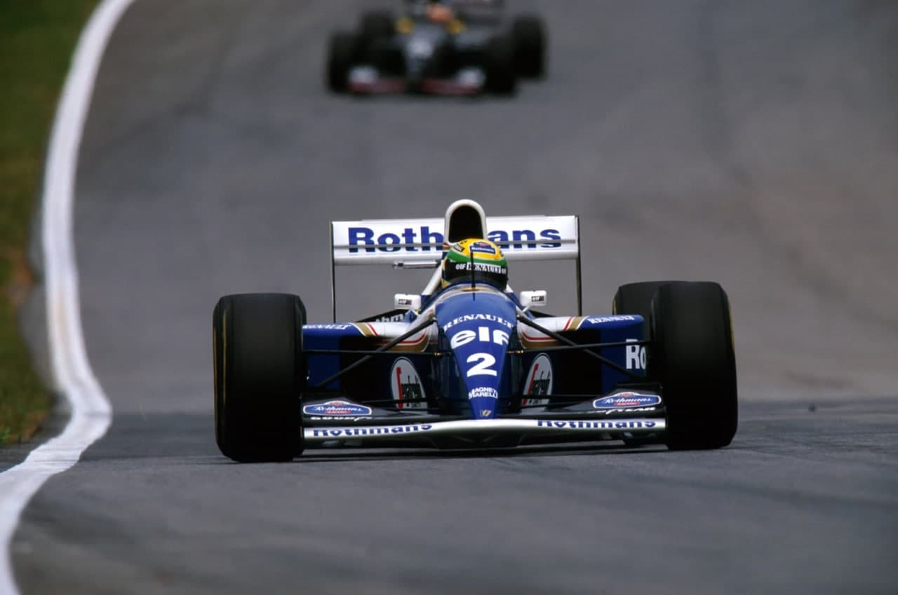
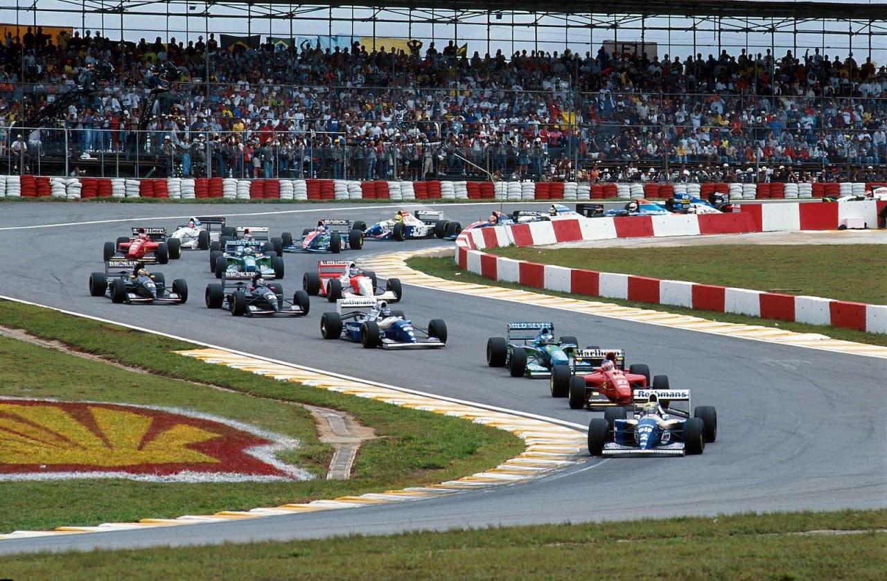

Interlagos - 18/03/1994
SENNA ERRA E SCHUMACHER VENCE

Mais rápido em todos treinos, Senna tenta anular desvantagem do Williams, erra, roda e abandona. Schumacher vence com 1 volta à frente de Hill. Alesi, 3º, e Rubinho, 4º. Reabastecimentos voltam e equipes médias mais competitivas. Irvine culpado de espetacular capotagem.
Francisco Santos
Para o povo brasileiro, era certo que Ayrton Senna iria não só ganhar o seu 3º GP do Brasil, como, agora na ausência do rival Prost o campeonato seria uma barbada. Nem dava para discutir. Era Senna na cabeça. Duas semanas antes do GP escrevia na minha coluna que a vida de Ayrton não iria ser tão fácil assim. Mesmo tendo finalmente conseguido o carro dos seus sonhos, Ayrton teria de brigar muito, porque o Williams de 94, sem suspensão eletrônica e controle de tração, perdera a sua superioridade. No entanto, o amor e os sonhos são cegos. Ninguém via a superioridade demonstrada pela Benetton-Ford de Michael Schumacher durante todos os testes de inverno. Todos continuavam acreditando que não poderia dar outra coisa senão uma vitória de Senna. Porque era isso que todo o mundo esperava, a volta do favoritismo do seu grande ídolo. Como poderíam pensar diferente se ele fazia o melhor tempo em todas as sessões de treino? Nem dava para desconfiar quando no sábado, Schumacher chegou a bater Ayrton. Como poderíam, se a paixão era tanta?

As dificuldades de Ayrton
Talvez por isso, custou tanto a cair na real. Primeiro, quando o alemãozinho depois de emendar o seu erro na largada frouxa conseguiu finalmente passar Alesi na 2ª volta, depois de várias tentativas, e começou a atacar a liderança de Senna. Daí para a frente ficou nítido, mesmo para os olhos do torcedor paulista, que, afinal, não iria ser tão fácil assim. Talvez fosse, mesmo muito difícil. Ayrton lutava com o Williams, brigava com o volante como não o víamos fazer desde os tempos da Lotus, ensaiava freadas cada vez mais tardias, sem conseguir evitar algumas fritadas de pneu na aproximação do Pinheirinho. Tudo de uma forma desesperada, para conseguir manter-se na frente do Benetton de Schumacher, nitidamente mais estável, curvando, freando à vontade. A diferença entre o indomável Williams e o dócil Benetton diminuia até pouco mais de meio segundo quando Ayrton entra no box na 21ª volta para reabastecimento, e o alemão entra colado. O primeiro balde de água fria veio logo em seguida, quando o Benetton sai primeiro do box e passa a liderar a prova, com uma vantagem de 2,5s na volta seguinte! Vinte voltas depois, a diferença estabilizara-se em 6s, quando os dois vão de novo ao box. Ayrton, primeiro, volta a perder 1,2s em relação ao líder. Na 46ª volta, Schumacher tem uma vantagem de 9,7s. Era o fim? Ainda não. Mas, só porque no Williams n°2 estava Ayrton, para quem um segundo lugar não servia. Lutou ainda mais, extorquindo aqui e acolá preciosos centésimos de segundo ao Williams. Na 55ª volta já estava apenas a 5,5s de Schumacher. No entanto, na 56ª saída na Junção, acelerou um pouco cedo e forte demais, a traseira do Williams soltou-se, e rodou: “Não há que esconder, foi erro meu”.

Desânimo geral
Talvez por isso, custou tanto a cair na real. Primeiro, quando o alemãozinho depois de emendar o seu erro na largada frouxa conseguiu finalmente passar Alesi na 2ª volta, depois de várias tentativas, e começou a atacar a liderança de Senna. Daí para a frente ficou nítido, mesmo para os olhos do torcedor paulista, que, afinal, não iria ser tão fácil assim. Talvez fosse, mesmo muito difícil. Ayrton lutava com o Williams, brigava com o volante como não o víamos fazer desde os tempos da Lotus, ensaiava freadas cada vez mais tardias, sem conseguir evitar algumas fritadas de pneu na aproximação do Pinheirinho. Tudo de uma forma desesperada, para conseguir manter-se na frente do Benetton de Schumacher, nitidamente mais estável, curvando, freando à vontade. A diferença entre o indomável Williams e o dócil Benetton diminuia até pouco mais de meio segundo quando Ayrton entra no box na 21ª volta para reabastecimento, e o alemão entra colado. O primeiro balde de água fria veio logo em seguida, quando o Benetton sai primeiro do box e passa a liderar a prova, com uma vantagem de 2,5s na volta seguinte! Vinte voltas depois, a diferença estabilizara-se em 6s, quando os dois vão de novo ao box. Ayrton, primeiro, volta a perder 1,2s em relação ao líder. Na 46ª volta, Schumacher tem uma vantagem de 9,7s. Era o fim? Ainda não. Mas, só porque no Williams n°2 estava Ayrton, para quem um segundo lugar não servia. Lutou ainda mais, extorquindo aqui e acolá preciosos centésimos de segundo ao Williams. Na 55ª volta já estava apenas a 5,5s de Schumacher. No entanto, na 56ª saída na Junção, acelerou um pouco cedo e forte demais, a traseira do Williams soltou-se, e rodou: “Não há que esconder, foi erro meu”.
NOVO REGULAMENTO
Com os objetivos de devolver o comando dos carros aos pilotos e de aumentar o espetáculo, a FIA introduziu novos regulamentos técnico e esportivos para a F1:
Treinos: os 90 minutos de cada uma das duas sessões matinais passam a ser divididos a meio, com um intervalo de 15 minutos para trazer para os boxes as viaturas paradas no circuito.
Ajudas de pilotagem: Banidas suspensões ativas, sistemas de anti-patinagem (controle de tração) e anti-blocagem (ABS), direção e freios assistidos, câmbios automáticos, aceleradores “fly by wire”. Reabastecimentos: Depois de dez anos, voltam de forma obrigatória, em prol do show.

OS TREINOS
Em São Paulo o tempo nao é confiança. Pode garoar ou cair um violento pé d’água de repente. Sexta feira começou encoberta, garoando. No entanto, na primeira qualificaçao a pista estava seca e a temperatura foi de 27 graus. Uma coisa foi certa: o favoritismo popular de Senna confirmou-se. Flávio Gomes até escreveu na Folha: “Era tão óbvio que não teve nem graça. Ayrton Senna confirmou todas as previsões e fez a pole provisória…”. Estas previsões, no entanto, nao eram muito sólidas, já que logo desde o inicio o Benetton de Schumacher se mostrou de igual para igual com o Williams de Senna, começando por fazer o melhor tempo no inicio das duas qualificações. No sábado à tarde, o alemão chegou mesmo a bater a pole provisória de Senna da véspera, com 1m 16,26s com seu primeiro jogo de pneus. Aí, Senna, saiu para a pista, fez 1m16,29s na primeira volta lançada e na segunda foi o primeiro a baixar do segundo 1m15,962s. Pouco depois começou a chover forte em Interlagos, dando praticamente por encerrada a discussão da pole , a 63ª de Ayrton. Para ele, “a pista está com muitos saltos, o que é pior sem a suspensão ativa” e lembrou que se o piso fosse melhor, “o Williams teria mais vantagem sobre o Benetton. Se tivesse podido usar o 2° jogo de pneus, teria melhorado”. Claro que Schumaclier também acreditava que podería ter melhorado: “teria sido uma boa luta, mas infelizmente veio a chuva”. Foi ela que evitou que o tempo da pole de Prost de 1993 fosse batido. De repente, às 13.30h, começou a chover forte, e a pista rapidamente ficou inundada. Mesmo assim, Ayrton, o grande profissional, foi o primeiro a ir a pista. O povão adorou. Sem forçar muito, que nao convinha… Senna fez 1m52,591s, ou seja, mais 36s do que na pista seca. Schumacher, para mostrar a sua supremacia latente, andou que nem louco e fez menos 12s (!!!) 1m40,148s. Para isso chegou a atingir a velocidade maxima de 277km/h naquele lago. Claro que acabou o treino com uma valente rodada. Realces dos dois dias: na 6ª de manhã, Hill nem conseguiu treinar. Primeiro, o extintor disparou e, depois, um problema elétrico o deixou parado na primeira volta. Teve também grandes dificuldades no piso irregular, sendo apenas 7° na sexta, para melhorar para 4° no grid. Na Ferrari as coisas não estiveram muito calmas. Berger teve sérios problemas com o novo 412T, primeiro com problemas hidráulicos no câmbio, que o deixaram parado no circuito e depois com poucas voltas no sábado só conseguiu ser 17° no grid. Alesi, como de costume, lutou com o carro e foi 3°, apesar de 1s atrás de Schumacher. A boa notícia foi a aprovação da FIA para a nova gasolina Agip.

A McLaren, sem o sistema de acelerador fly by wire, teve problemas com os aceleradores mecânicos presos que só funcionavam, no caso de Mika Hakkinen, 92%, com perda de 60 a 70bhp. Frentzen foi 5° no seu primeiro GP, enquanto Katayama conseguia sua melhor posição no grid, 10°, na frente de Blundell, que só acertou o carro pouco antes de começar a chover no sábado. Essa chuvarada também surprendeu Alboreto, que na manna fora 3° a 5 minutos do final. Teve de trocar de motor que só ficou montado mesmo antes do pé d’água cair. Depois, no warm-up confirmaria, foi 3°. Também Christian Fittipaldi não conseguiría manter os tempos nos treinos livres (3° na sexta e 4° a que chegou no sábado) por problemas de estabilidade e foi apenas 11 no grid, com Morbidelli em 6°. Rubinho foi de novo 14°, sem poder melhorar na chuva. Pedro Lamy teve problemas de acerto na sexta e de tração no sábado, antes de rodar. Não qualificados: Ratzenberger e Belmondo, empate para a Simtek e a Pacific. Ás boas surpresas foram: a aproximação das performances das equipes medias, apenas 2s separaram o 3° do 20° no grid (menos 1,1s que em 1993). Entre os dez primeiros havia 7 carros e motores diferentes.

A CORRIDA
No sábado a noite o trânsito paulistano virou o inferno com tanta chuva que caiu. No entanto, o domingo amanheceu com a pista úmida e o céu limpo. Na hora da comda, o céu encobriu, e vinte minutos antes da largada alguns pingos cairam. A instabilidade pairava no céu. No box da Ferrari instalara-se o pânico. Nenhum dos três carros estava pronto: motores haviam quebrado em dois carros e o de Alesi tinha problemas no controle hidráulico das trompetas variáveis. Alesi decide correr com o reserva. Na largada correu tudo normal, sem percalços. Apenas com o único erro de Schumacher em toda a corrida, deixando passar Alesi. Também Berger fez excelente largada subindo para 7° na 1ª volta, que pouco lhe valeu pois à 5ª volta o motor parou, o seu terceiro no fim de semana. As primeiras duas voltas foram entusiasmantes. Na Junção, Schumacher passa Alesi, mas este sai melhor e passa o alemão na subida dos boxes. Na volta seguinte, Schumacher passa no mesmo lugar, e o francês tenta recuperar a posição na reta, mas o Benetton mantem-se lado a lado e Schumacher fecha a porta na freada para o S do Senna. Daí para a frente foi embora, na perseguição a Senna, que na 3ª volta já havia aberto 4s de vantagem, sua maior. O primeiro acidente da temporada ocorreu nessa volta, quando Beretta freou violentamente para evitar o Ligier de Bernard que rodou à sua frente e foi abalroado por Gachot. Morbidelli abandonou logo depois com câmbio quebrado, primeira grande desilusão depois da soberba performance nos treinos. Brundle foi o primeiro piloto a reabastecer desde 1983: parou na 15ª volta. O temor do perigo de incêndio nos reabastecimentos foi infundado: tudo decorreu sem incidentes.
No entanto, na 34ª volta, um espetacular acidente afastou 4 carros na aproximação da curva 3. Brundle, com problemas de amortecedor diminuira a velocidade, tencionando vir ao boxe, e encostara à direita. Na faixa esquerda da pista, três carros se aproximavam: o Ligier de Bernard, prestes a perder uma volta para o Jordan de Irvine, que estava sendo passado pelo Benetton de Verstappen. No entanto, Irvine sai da traseira do Ligier ao mesmo tempo que Versatappen se prepara para o passar. Os três carros ficam lado a lado, em alta velocidade, na descida da reta, em frente as arquibancadas Shell. Irvine não toma conhecimento de Verstappen e mantem o pé em baixo, empurrando o Benetton para a grama, onde perde aderência, volta à pista de lado, sobe numa roda do Jordan, é catapultado, voa por cima do McLaren, bate com uma roda no capacete de Brundle e aterrissa de bico.

Nessa fase, Rubinho, que ganhara quatro posições na 1ª volta, iniciava a sua luta com Wendlinger pelo 5º lugar, que só havia de conseguir na primeira parada para reabastecimentos. Manteria a posição, subindo para 4º com o abandono de Senna. Christian, 8º na 19a volta, teve problemas de câmbio e ficou em neutro, abandonando na 21ª. Lamy conseguiu terminar seu primeiro GP, com uma prova sensata apesar dos problemas de falta de aderência. Katayama foi um brilhante 5°, conquistando os seus primeiros dois pontos, apesar da garrafa de água lhe ter caído aos pés e de ter ficado sem informações no painel, e Wendlinger, 6°, enquanto Panis chegava em 11º na sua estréia e Brabham levou o Simtek até ao fim na estréia da equipe. No final, Udo Kruse, Presidente da Ford Brasil, tomou um banho de champanhe de Schumacher. Não era para menos, o novo motor Ford Zetec R estreara vencendo, como o DFV, no GP da Holanda de 1967.

Resultado da classificação
| Pos | No | Driver | Constructor | Q1 | Q2 | Gap |
|---|---|---|---|---|---|---|
| 1 | 2 | Ayrton Senna | Williams-Renault | 1:16.386 | 1:15.962 | — |
| 2 | 5 | Michael Schumacher | Benetton-Ford | 1:16.575 | 1:16.290 | +0.328 |
| 3 | 27 | Jean Alesi | Ferrari | 1:17.772 | 1:17.385 | +1.423 |
| 4 | 0 | Damon Hill | Williams-Renault | 1:18.270 | 1:17.554 | +1.592 |
| 5 | 30 | Heinz-Harald Frentzen | Sauber-Mercedes | 1:18.144 | 1:17.806 | +1.844 |
| 6 | 10 | Gianni Morbidelli | Footwork-Ford | 1:18.970 | 1:17.866 | +1.904 |
| 7 | 29 | Karl Wendlinger | Sauber-Mercedes | 1:17.982 | 1:17.927 | +1.965 |
| 8 | 7 | Mika Häkkinen | McLaren-Peugeot | 1:18.122 | 1:19.576 | +2.160 |
| 9 | 6 | Jos Verstappen | Benetton-Ford | 1:18.787 | 1:18.183 | +2.221 |
| 10 | 3 | Ukyo Katayama | Tyrrell-Yamaha | 1:19.519 | 1:18.194 | +2.232 |
| 11 | 9 | Christian Fittipaldi | Footwork-Ford | 1:18.730 | 1:18.204 | +2.242 |
| 12 | 4 | Mark Blundell | Tyrrell-Yamaha | 1:19.045 | 1:18.246 | +2.284 |
| 13 | 20 | Érik Comas | Larrousse-Ford | 1:18.990 | 1:18.321 | +2.359 |
| 14 | 14 | Rubens Barrichello | Jordan-Hart | 1:18.759 | 1:18.414 | +2.452 |
| 15 | 23 | Pierluigi Martini | Minardi-Ford | 1:18.659 | no time | +2.697 |
| 16 | 15 | Eddie Irvine | Jordan-Hart | 1:19.269 | 1:18.751 | +2.789 |
| 17 | 28 | Gerhard Berger | Ferrari | 1:18.931 | 1:18.855 | +2.893 |
| 18 | 8 | Martin Brundle | McLaren-Peugeot | 1:18.864 | 13:18.601 | +2.902 |
| 19 | 26 | Olivier Panis | Ligier-Renault | 1:19.304 | 1:19.533 | +3.342 |
| 20 | 25 | Éric Bernard | Ligier-Renault | 1:19.396 | 1:19.633 | +3.434 |
| 21 | 12 | Johnny Herbert | Lotus-Mugen-Honda | 1:19.798 | 1:19.483 | +3.521 |
| 22 | 24 | Michele Alboreto | Minardi-Ford | 1:19.517 | no time | +3.555 |
| 23 | 19 | Olivier Beretta | Larrousse-Ford | 1:19.922 | 1:19.524 | +3.562 |
| 24 | 11 | Pedro Lamy | Lotus-Mugen-Honda | 1:21.029 | 1:19.975 | +4.013 |
| 25 | 34 | Bertrand Gachot | Pacific-Ilmor | 1:22.495 | 1:20.729 | +4.767 |
| 26 | 31 | David Brabham | Simtek-Ford | 1:22.266 | 1:21.186 | +5.224 |
| DNQ | 32 | Roland Ratzenberger | Simtek-Ford | 1:22.707 | 1:23.109 | +6.745 |
| DNQ | 33 | Paul Belmondo | Pacific-Ilmor | no time | no time | — |
Resultado da corrida
| Pos | No | Driver | Constructor | Laps | Time/Retired |
|---|---|---|---|---|---|
| 1 | 5 | Michael Schumacher | Benetton-Ford | 71 | 1:35:38.759 |
| 2 | 0 | Damon Hill | Williams-Renault | 70 | + 1 Lap |
| 3 | 27 | Jean Alesi | Ferrari | 70 | + 1 Lap |
| 4 | 14 | Rubens Barrichello | Jordan-Hart | 70 | + 1 Lap |
| 5 | 3 | Ukyo Katayama | Tyrrell-Yamaha | 69 | + 2 Laps |
| 6 | 29 | Karl Wendlinger | Sauber-Mercedes | 69 | + 2 Laps |
| 7 | 12 | Johnny Herbert | Lotus-Mugen-Honda | 69 | + 2 Laps |
| 8 | 23 | Pierluigi Martini | Minardi-Ford | 69 | + 2 Laps |
| 9 | 20 | Érik Comas | Larrousse-Ford | 68 | + 3 Laps |
| 10 | 11 | Pedro Lamy | Lotus-Mugen-Honda | 68 | + 3 Laps |
| 11 | 26 | Olivier Panis | Ligier-Renault | 68 | + 3 Laps |
| 12 | 31 | David Brabham | Simtek-Ford | 67 | + 4 Laps |
| Ret | 2 | Ayrton Senna | Williams-Renault | 55 | Spun Off |
| Ret | 8 | Martin Brundle | McLaren-Peugeot | 34 | Collision |
| Ret | 15 | Eddie Irvine | Jordan-Hart | 34 | Collision |
| Ret | 6 | Jos Verstappen | Benetton-Ford | 34 | Collision |
| Ret | 25 | Éric Bernard | Ligier-Renault | 33 | Collision |
| Ret | 4 | Mark Blundell | Tyrrell-Yamaha | 21 | Spun Off |
| Ret | 9 | Christian Fittipaldi | Footwork-Ford | 21 | Gearbox |
| Ret | 30 | Heinz-Harald Frentzen | Sauber-Mercedes | 15 | Spun Off |
| Ret | 7 | Mika Häkkinen | McLaren-Peugeot | 13 | Engine |
| Ret | 24 | Michele Alboreto | Minardi-Ford | 7 | Engine |
| Ret | 10 | Gianni Morbidelli | Footwork-Ford | 5 | Gearbox |
| Ret | 28 | Gerhard Berger | Ferrari | 5 | Engine |
| Ret | 19 | Olivier Beretta | Larrousse-Ford | 2 | Collision |
| Ret | 34 | Bertrand Gachot | Pacific-Ilmor | 1 | Collision |